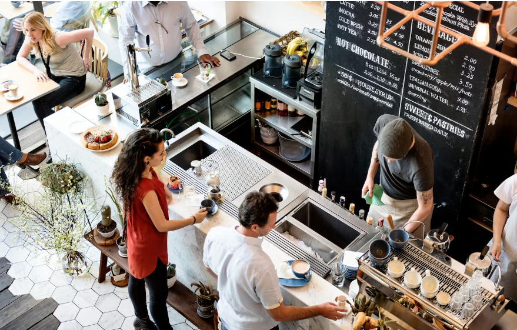

"Welcome to Nice Coffee: Your Oasis of Flavor"
Nice Coffee isn't just a café; it's an immersive journey into the world of exceptional coffee and warm hospitality. Nestled in the heart of Yogyakarta, we are your go-to destination for a delightful coffee experience. Step into our cozy ambiance, where the rich aroma of freshly roasted beans greets you at the door. Our expert baristas are artisans, crafting each cup with precision and passion. From classic espresso to artisanal brews, our menu boasts an array of coffee creations to satisfy every palate. But Nice Coffee isn't just about coffee; it's a community. It's a place where friends gather, ideas flow, and memories are made. With free Wi-Fi and comfortable seating, it's an ideal spot for work, study, or simply unwinding. Pair your coffee with our delectable pastries, sandwiches, and desserts, all made in-house with the finest ingredients. And don't miss out on our signature Nice Coffee blend, an exclusive creation that embodies the essence of our café. At Nice Coffee, we're not just brewing coffee; we're brewing connections. So whether you're seeking your daily caffeine fix or a new spot to call your own, make Nice Coffee your destination for a coffee experience that's simply nice.